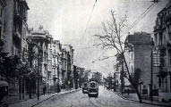
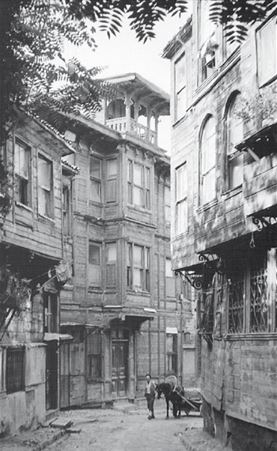

Beyoğlu, Nişantaşı, Şişli semtinde ikamet etmek eski ricalin hayalinden geçmezdi. Bu adamlar öz İstanbul’u severler, daha millî bulurlardı. Tercihen de Marmara Denizi’ni gören arsalarda yerleşirlerdi. Midhat Paşa Konağı bunlardan biri idi. Denizi, adaları, hatta Keşiş Dağı’nı kucaklıyormuş gibi manzarası vardı. Biraz gerisinde Cezzar Ahmed Paşa Konağı (bunu sonraları Meclis-i Maarif Reisi Haydar Molla almıştı), Dâhiliye Müsteşarı[42] Celal, Divan-ı Muhasebat[43] Reislerinden Mucip Bey’in konakları birbirinden güzel nezaretlere sahip idiler. Hele Mucip Bey Konağı’nın mevkii muhakkak olarak emsaline faik idi.[44] Hiç unutmam bu muhterem zat, kızını Reşad Rıdvan Bey’le burada evlendirmişti. Sonu gelmemişti fakat...

Şişli’den bir görünüm
Beyazıt’ın Soğanağa Mahallesi’ne tesadüf eden bu yerlerde ve geniş bahçe ortasında bir konak daha vardı. Sahibi kimdi, şimdi hatırlayamıyorum. Yalnız bu mübarek hanede Hoca İbrahim Efendi’nin Şemsülmaarif Mektebi vardı. Ben de talebesi idim.
Buralarda bir de Dâhiliye Nâzırı[45] Said Efendi’nin konağı vardı. Güzel bir bahçe içinde kârgir bir bina, vâsî bir nezaret.[46] Bu zatın son memuriyeti Sultan II. Abdülhamid devrine tesadüf eder. 1324 [1908] Meşrutiyet’inden sonralara kadar yaşadı. Muhterem bir zat idi. Nedense Sultan II. Abdülhamid’in tavrını ve idare tarzını beğenmediği için kendini unutturmaya çalışarak muvaffak da olmuştu.
Güzel konaklardan biri de Şehzadebaşı’nda Acemoğlu Hamamı’nın bulunduğu sokakta Sadrazam Saffet Paşa Konağı idi. Bir aralık Mülkiye İdadisi Vefa’daki Ahmed Muhtar Paşa Konağı’na gitmezden evvel burada idi. Ben burada da talebe idim. Saffet Paşa’nın konağı çok sevdiğini söylerler.
Yine Şehzadebaşı’nda Burmalımescit Camii’nin yanındaki ev de hayli büyüktü ve kocaman bahçeleri, ağaçları vardı. Ben burayı Numune-i Terakki Mektebi iken içinde okuduğum için bilirim. O gün bugündür büyükbabamın özene özene satın aldığı ve üstüne titrercesine sevdiği bu binanın vefatından sonra hiç de lüzumu olmadığı halde satılmasına hâlâ acırım. Sadrazam Büyük Fuad Paşa’nın konağında hemen yanı başımızda imiş. Fakat bir gece iki saat zarfında yanmış, kül olmuş. Ve harikzedeler[47] birkaç gün bize misafir olmuşlar. Fuad Paşa Beyazıt’taki konağı bundan sonra yaptırmıştır. Burası bugün [1946] Tıbbiye Mektebi’dir.
Burmalımescit’ten Koğacılar Mahallesi’ne doğru giden sokakta daha iki konak hatırımdan çıkmıyor. Bunlardan biri Reşid Akif Paşa’nın, diğeri de Refik Halid [Karay]’in pederi Halid Bey’indir. Bunlar yan yana idiler. Sonra Haliç üzerinden bir nezaret vardı, doyulmaz güzellikte idi. Refik’in konağındaki hamam kubbeli ve üstünde küçük küçük pencereli, içinde bir de ayrıca mermerden idi. Bu hamam İstanbul evlerindeki hususi ev hamamlarının elbette birincisi idi.
Cidden güzel konaklardan biri de Bab-ı Fetva yani Şeyhülislam Kapısı’ydı ve çok havadar bir arsa üzerinde kâindi.[48] Şeyhülislam Mehmed Cemaleddin Efendi burası için “Yazın Kuruçeşme’deki yalıdan daha çok serindir” dermiş. Bu şeyhülislamın Fatih’te Devehanı’ndaki kendi konağı hele mevkii itibarıyla enafisten[49] bir şeydi. Bunun bir hususiyeti de biçare Muhtar’ın burada yalnız olarak ikametiyle başlamıştı. Ahmed Muhtar Bey, Şeyhülislam Cemaleddin Efendi’nin ikinci oğludur. Yalnız kendisine benzer bir efendizade ve tab’an, meşreben[50] harikulade idi. Vâsi[51] bahçeli bu konakta neler yapmazdı, bu efendizade. Bahçede koşuşlar, bisiklet egzersizleri, körebe oyunları ve havuzda yuvarlamalar, sabahlara kadar durup dinlenmeden çene çalmalar, Evkaf Nâzırı Galip Paşa torunu Şakir Cemal’in tiyatro hitabeleri, bilahare şeyhülislam olan Musa Kâzım Efendi’nin bir nevi ders takrirleri, Ahmed Şuayib’in, Samim’in, Celal Sahir’in mübahase ve müşaareleri,[52] Cavid ve Hüseyin Cahid Beylerle Muhtar’ın münakaşaları, İttihatçıları Nafia Nezareti’ne getirdikleri Hallaçyan Efendi’ye yapılan takazalar, bazen saz âlemleri, yaşadıkları devri çekiştiren lâkırdılar o zamana göre tehlikeli sözler hep Devehanı’ndaki bu konakta yapılırdı.
Konakların şahı bence Çapa’daki Derviş Paşa Konağı’ydı. Hele bahçesi, bahçe meraklılarını imrendirecek derecede tertipli idi. Havuzlar, fıskiyeler, şelaleler, laleler, serler, ufak mandıra; inekler, koyunlar, atlar, arabalar, ahırlar dolu bu konakta bahçenin geniş bir bostanı da vardı. Müteaddit kuyu ve çeşme ayrıca çilek tarlaları vardı. Koca konak bunlar sayesinde kendi yağıyla kavrulurdu, kendi sütünü içerdi. Sözün kısası çiftlik gibi bir şeydi. Bugün [1946] yalnız selamlık dairesi yerinde duruyor ve Çapa’da Selçuk Enstitüsü’nün binası olarak kullanılmaktadır.
1287 [1870] tarihinde vefatını müteakip satılan Ali Paşa Konağı da cesamet ve nezaret[53] bakımından hayli genişti. Bu konak Mercan’da kâin idi. Sonra iki sultana saray, daha sonra Mercan İdadi’si olmuştur. Benim çocukluğumda yaşlılar bundan bahsederken, “Göze battı, şeamet[54] doğurdu; paşayı da ailesini de yok etti” derlerdi.

Süleymaniye’de Cihannüma’lı ev, 19. yüzyıl sonu
Kaynak: Doğan Kuban, Türk “Hayat”lı Ev.
Yıkılan İbrahim Paşa hamamının hemen arkasında Hacı Akif Paşa konağına gelince, bunun şöhreti Resne dağlarından hürriyet, müsavat, uhuvvet ve adalet[55] getiren [Resneli] Niyazi Bey’in geyiğini bahçesinde ziyaret ettirilmesiyle başlar. Sadrazam Kamil Paşa’nın da buralarda Kıztaşı’nda bir konağı vardı. Fakat Çarşamba’da İşkodralı Rıza Bey’in konağı Darüşşafaka’nın yanında idi ve kârgir bir bina idi. Bugün ondan da eser kalmamıştır.
Saraçhane’de Münir Paşa Konağı geçen sene [1945] yanmıştı. Tosun Paşa konağının arsasında Çukurçeşme’de şeyhülislam ve Evkaf Nâzırı Hayri Efendi’nin Evkaf’a yaptırdığı apartmanlar bulunuyor. Tosun Paşa, Kıbrıslı Mehmed Paşa’nın damadı Mustafa Paşa’nın babasıdır.
Bu satırları bitirirken Münif Paşa’nın Süleymaniye’deki konağını unutmuş değilim. Ne güzel bir konaktı. Önünde bir bahçeciği, yüksek olmayan duvarcığı ve parmaklıklarını ve “Ya Fettah”[56] yazılı kocaman levhasını bugün gibi gözümün önünde görüyorum. Babam elimden tutmuş, birkaç defa buraya götürmüş, çok kimsenin hürmet ettiği paşanın ellerini öptürmüştü. Paşanın bir konağı daha vardı. Şimdi Ebüzziya Matbaası’dır.
Akşam, 15 Ekim 1946